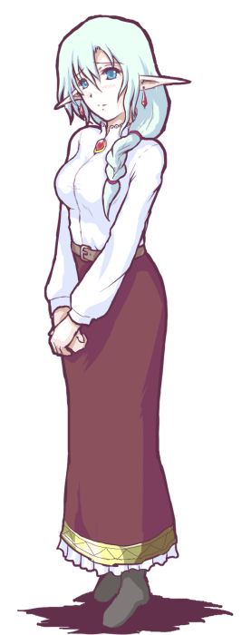

■2021-11-20 (土) お絵かきと未亡人属性雑談▼
お絵かき、耳長人の宿の主人！

来年2022年発売予定の『旅団世界TRPGリプレイ3巻』からの登場キャラです。
耳長人で未亡人で、宿の借金のカタに水着写真を撮影されて
写真集まで販売されてしまっている（※印税はちゃんともらってます）という
幸が薄そうな人です。
ゲーム世界内で「最近になって写真技術の輸入と印刷術が普及してきている」ことを
プレイヤーたちに伝えるための設定だったのですが
「あんまりだ！」と言われてしまいました。
【「未亡人」属性の外してなさについて】
そしてここからはとりとめの無いぼんやり思考の話なんですが、
「未亡人」という属性、恋愛シミュレーションゲームなどにでてきた場合に
個人的に好みをほとんど外さないタグなので
とてもありがたいなと思っているんですよ。
私のゲームを遊ぶと、もしかしたら「幸が薄そうな感じの淑女キャラ」が
好きなんじゃないか、と思われる方も一定数いらっしゃると思いますが、
だいたいそれは当たっています。
「淑女」の部分は純粋に好みですが、「かわいそうなキャラ」って
自然と助ける流れに繋がるので先が読みやすいのと、
嫌な気分になる状況が少ないので安定度・期待度が高いところがあるのかもしれません。
（あとかわいそうなキャラは色んなシチュエーションの中で同情しやすさが高い！）
で、『色んなタイプのキャラが出てくるゲーム』で
かわいそうな空気感の淑女系キャラを探すに当たって、
「未亡人」ってタグが付いているキャラクターってだいたい丁寧系かつ
不憫そうな雰囲気を出している系キャラである確率が90％くらいなんですよ。
「未亡人」というオーダーで出てくるものの幅が細い！
ちゃんとタグとしての機能を果たしている！
一方、これが「王女様」タグだったりすると、かわいそうだったり強気だったり
優秀系だったり浮世離れ系だったりといったバリエーションが出てしまうので
キャラの性格的に期待したものが出てくる確率は3割以下になります。
それで思ったんですよ。
「あるタグの好き嫌いには、タグの事象そのものでなく付随しやすい
『シチュエーション』や『性格』がセットになる（場合もある）んだな！」
ということと、
「まだ『区別に必要なタグ』が生まれていないケースもめちゃくちゃあるな！」
という2つのことを！
『ツンデレ』など、特別感のあるいくらかの属性にはすでに名前が付けられています。
（そもそも、そういったシチュエーションに「名前が付いて」、
「一般化」した時点で国民的センスがすごいと思います）
が、『不憫系淑女キャラ』みたいなのって一言で言えるタグがない！ 気がする！
もしかしたら複数タグ検索で出てくるようなものなのかもしれませんけれど！
とにかく、そういった、『タグ付けされていないシチュエーション』や
さらに言えば『もっと細かい部分の個性・傾向』の部分に関しては、
何を参考にすればいいんだ！ という話になるわけですが、その部分こそまさに
『作者名』こそが暗黙の成分表になっている
と言っちゃうこともできるんだろうな、なんてことをぼんやり考えていました。
そしてまた、一種の『成分表』なのだと思うと、
確かに『作者名』までじっくり見る人はそんないないな、とも思ったりしました。
「これは好きな『成分』だ！ 次も買う/見る！」って思った人が
主に使うもののような気がするんですよね、『作者名』って。
ということで、まとめると、
「『未亡人』タグで出てくるキャラはかなり幅が狭いので優秀なタグだなー！」
という話と、
「タグで分かりにくいところは、きっと『作者名』が一種の成分表になるんだな！」
という話でした。
といっても穴だらけの話なのでまだまだ整理・考察・修正・ツッコミができそうな話です。
今のところはここまでが自由時間の限界でした。
なお私は、細かい属性の判別が付きにくい「王女様」タグなどが出てきたら、
6割以上の確率で淑女系、かつ悲惨な運命を背負って登場するでしょう。
そんな雰囲気が私の『成分表』だと思うので、もしそういうのが好きな人は今後とも
スモーキングウルフという名前をよろしくお願いします！
以下はこの記事へのコメント返信です（2021/12/01追記）。
コメントを送ってくださるみなさま、いつも本当にありがとうございます！
＞耳長人で未亡人で、宿の借金のカタに水着写真を撮影されて写真集まで
＞販売されてしまっているってほとんどユーミスさんじゃないですかー！！！
そうなんですよ！ 辛うじて耳長人じゃないだけで他ほとんど一致！
しかも恐ろしいことに、セッションしてる間は
ユーミス（※シル幻・シル学の目の見えない少女「ウリユ」の母親）と
水着本への流れがほぼ被っていることにまったく気付いていませんでした。
私が未亡人を登場させると、潜在意識によって自然と未亡人の水着本が
出されてしまうというのが判明した一幕となってしまいましたね……。
これもスモーキングウルフ味です。
まあ合理的に考えても、10代女子の水着イラストよりは
未亡人の水着のほうが表現規制に引っかかりにくいでしょうし！？
いいんじゃないでしょうか！！
2021-11-20 (土)  カテゴリ: その他
カテゴリ: その他
 カテゴリ: その他
カテゴリ: その他